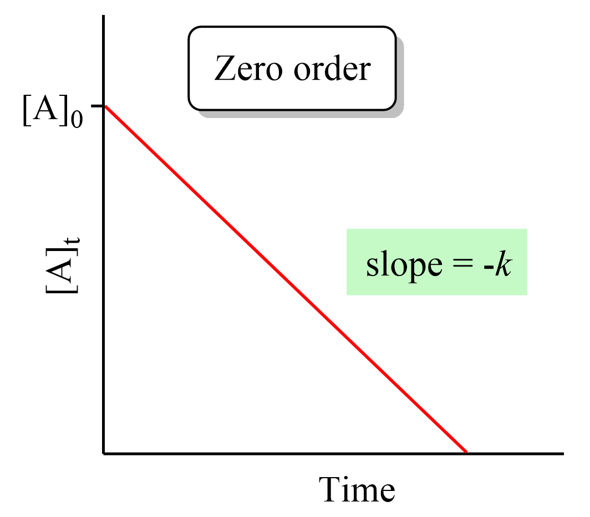

When graphed against the numeric concentration of the reactant with an x-axis of time, a zero order reaction will linearize.
It may also be noted that the slope of the linearized graph is negative, due to the fact that the usage of reactants causes a decrease in their concentrations.

Mathematically this makes sense, because the reaction rate is independent from the concentration of the observed reactant when the concentration is put to the power of 0, and thus
the reaction will consume the observed reactant at the same rate no matter how much reactant is remaining.
Such relationships tend to occur when a catalyst is required for the reaction to occur, because the amount of catalyst 'locks' how much can react at once, and thus the catalyst assumes the role of the rate determining step.